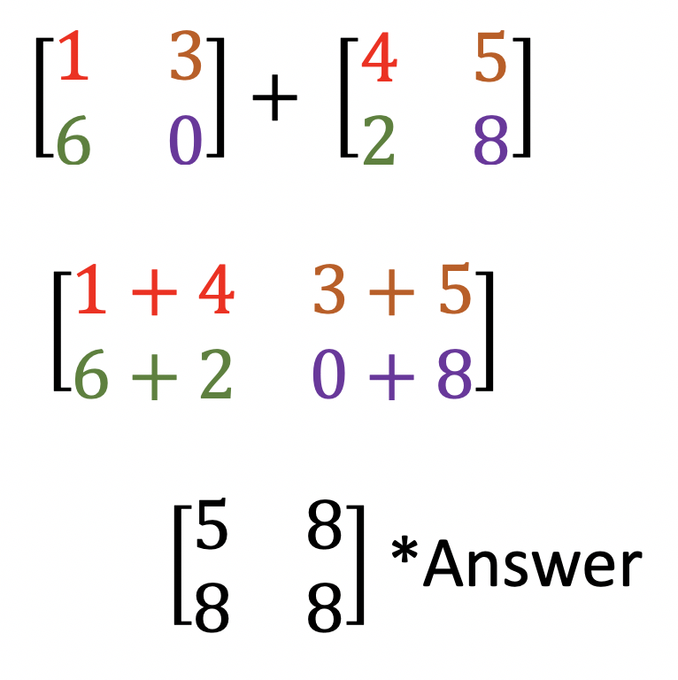

A Matrix is a rectangular order of numbers representing a specific set of data regarding a situation. Matrices are used to organize data in order to manipulate it easier than dealing with the data, or elements, without an organized arrangement of a matrix.
Each matrix has a certain number of rows and columns, very similar to a table of values. The dimensions of a matrix is defined by the number of rows and the number of columns, in that order.
For example, a matrix with 5 rows and 4 columns is called a 5 x 4 matrix. This is pronouced as a "five by four" matrix. A matric with 7 rows and 5 columns is called a 7 x 5, or "seven by 5" matrix.
The "x" between the number of rows and columns is pronounced as "by". The "x" has nothing to do with variable "x", nor the multiplication "x". The "x" acts the same as saying someone has a 4 x 4 truck, for example.
Each number in a matrix is called an element. They can also be referred to as an entry. To refer to a specific element in a matrix, refer to the row it is in first, then the column it is in.
The lower case letter "m" is used to represent the entire matrix. Two subscripts are used to locate an element's location in the matrix. Two subscripts are used without a comma between them.
For example, if you wanted to focus on a number in row 3 and column 4, you would write "m34".
If you wanted to focus on the entry in row 5 and column 6, you would write "m56".
What would the subscript be if you were focusing on the element in row 1 column 4? Enter your answer below and check to see if you are correct.
A matrix is composed of each of its elements surrounded always by a square set of brackets: [ ]
Here is an example of a 2 x 3 matrix:
Each element, or entry, in the matrix can be referred to using the row and column. For example, element m12 is the number in row one, column 2; or the number 5. Entry m23, is row 2 column 3; the number 9.
When two matrices have the same dimensions, the matrices can be added together to produce a third matrix. To do so, corresponding entries in each matrix are added together and the new matrix is formed by using the sum to create a new entry. You can also subtract and multiply matrices, which will be addressed at a later time.
Example 1: Add matrix A and matrix B to form matrix C. Match each entry in matrix A with each entry in matrix B, and add the two values together and replace the entries with their sum in the same location in matrix C.
For the first example, corresponding values have been highlighted using colors from the rainbow. Add each entry to produce the resultant, or answer, matrix.
Example 2: Add the matrices together.

Example 3: Add the matrices together.